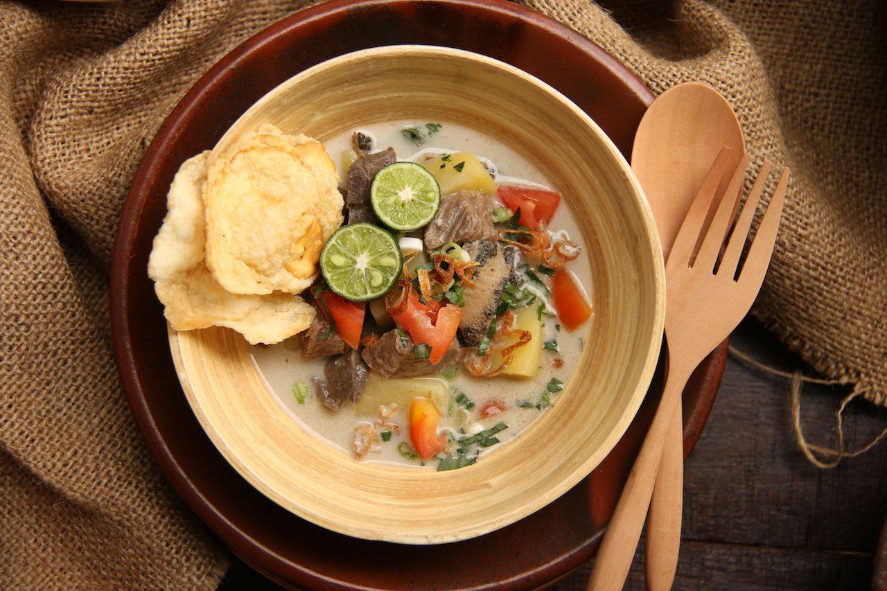

Soto Betawi
Jakarta, the vibrant capital of Indonesia, is a culinary treasure trove boasting an array of traditional foods that delight the senses. Jakarta's culinary scene offers a tantalizing journey through the rich and diverse flavors of Indonesian cuisine.
One of the famous food from Jakarta is Soto Betawi. It is a soup made with beef, offals, fried potato, and tomato that’s cooked in a cow’s milk or coconut milk broth. It’s served with fried shallots, emping (fried chips), lime, cucumber pickles, and chili on the side.